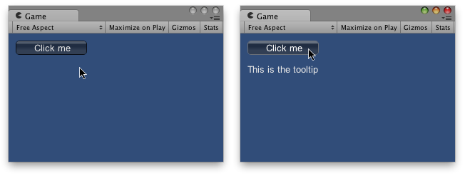

鼠标指针当前悬停在其上或具有键盘焦点的控件的工具提示。（只读）
创建 GUI 控件时，您可以为其传入工具提示。为此，请将内容参数更改为接受自定义的 GUIContent 对象，
而不是仅传入要显示的字符串。
When the mouse is over a control with a tooltip, it sets the global GUI.tooltip value to the tooltip you pass in.
If the mouse is not hovering over any control, the value is set to the control which has keyboard focus.
At the end of the OnGUI code, you can make a label showing the value of GUI.tooltip

GUI Tooltip on the Game view appears when the mouse is over the button.
using UnityEngine; using System.Collections;
public class ExampleClass : MonoBehaviour { void OnGUI() { // Make a button using a custom GUIContent parameter to pass in the tooltip. GUI.Button(new Rect(10, 10, 100, 20), new GUIContent("Click me", "This is the tooltip"));
// Display the tooltip from the element that has mouseover or keyboard focus GUI.Label(new Rect(10, 40, 100, 40), GUI.tooltip); } }
可以使用元素的顺序创建“分层”的工具提示：
using UnityEngine; using System.Collections;
public class ExampleClass : MonoBehaviour { void OnGUI() { // This box is larger than many elements following it, and it has a tooltip. GUI.Box(new Rect(5, 35, 110, 75), new GUIContent("Box", "this box has a tooltip"));
// This button is inside the box, but has no tooltip so it does not // override the box's tooltip. GUI.Button(new Rect(10, 55, 100, 20), "No tooltip here");
// This button is inside the box, and HAS a tooltip so it overrides // the tooltip from the box. GUI.Button(new Rect(10, 80, 100, 20), new GUIContent("I have a tooltip", "The button overrides the box"));
// finally, display the tooltip from the element that has // mouseover or keyboard focus GUI.Label(new Rect(10, 40, 100, 40), GUI.tooltip); } }
工具提示还可用于实现 OnMouseOver/OnMouseOut 消息系统：
using UnityEngine; using System.Collections;
public class ExampleClass : MonoBehaviour { public string lastTooltip = " ";
void OnGUI() { GUILayout.Button(new GUIContent("Play Game", "Button1")); GUILayout.Button(new GUIContent("Quit", "Button2"));
if (Event.current.type == EventType.Repaint && GUI.tooltip != lastTooltip) { if (lastTooltip != "") { SendMessage(lastTooltip + "OnMouseOut", SendMessageOptions.DontRequireReceiver); }
if (GUI.tooltip != "") { SendMessage(GUI.tooltip + "OnMouseOver", SendMessageOptions.DontRequireReceiver); }
lastTooltip = GUI.tooltip; } }
void Button1OnMouseOver() { Debug.Log("Play game got focus"); }
void Button2OnMouseOut() { Debug.Log("Quit lost focus"); } }